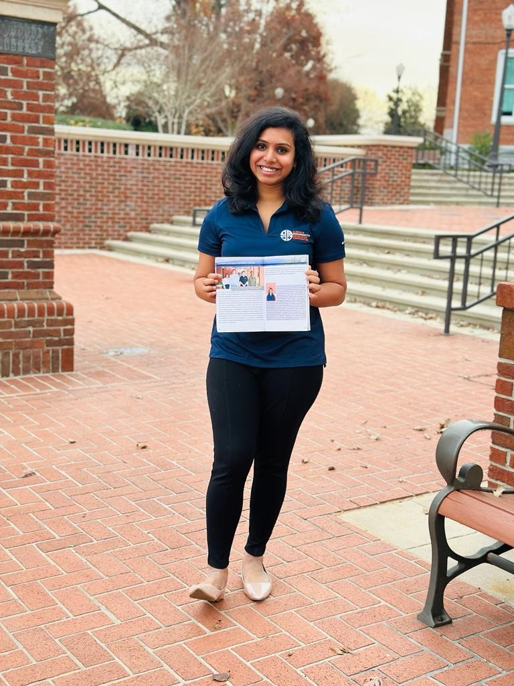
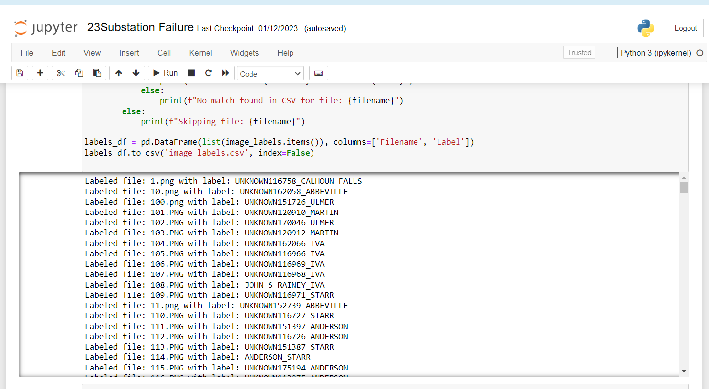
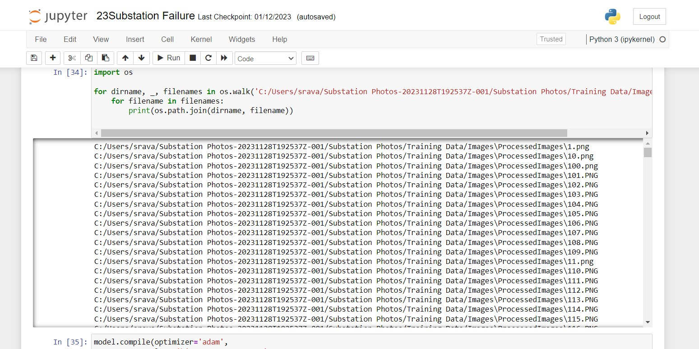
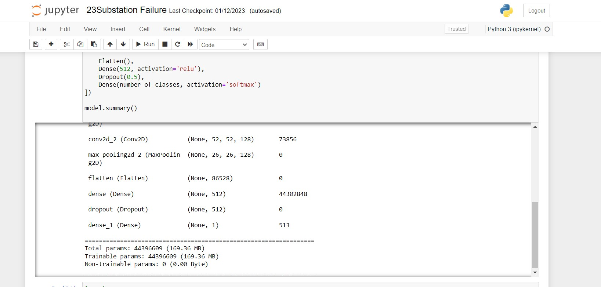
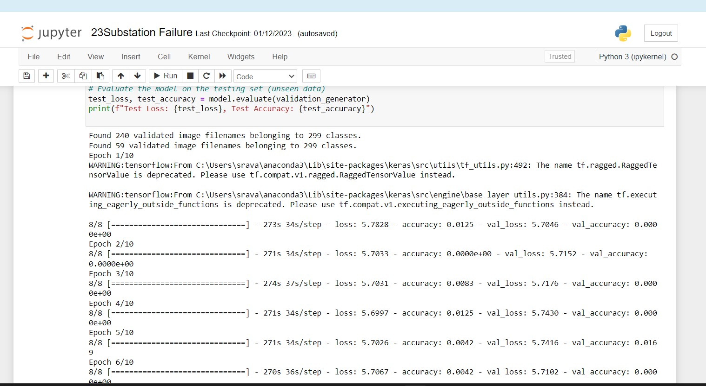
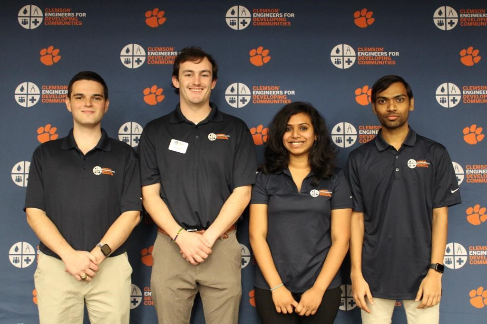
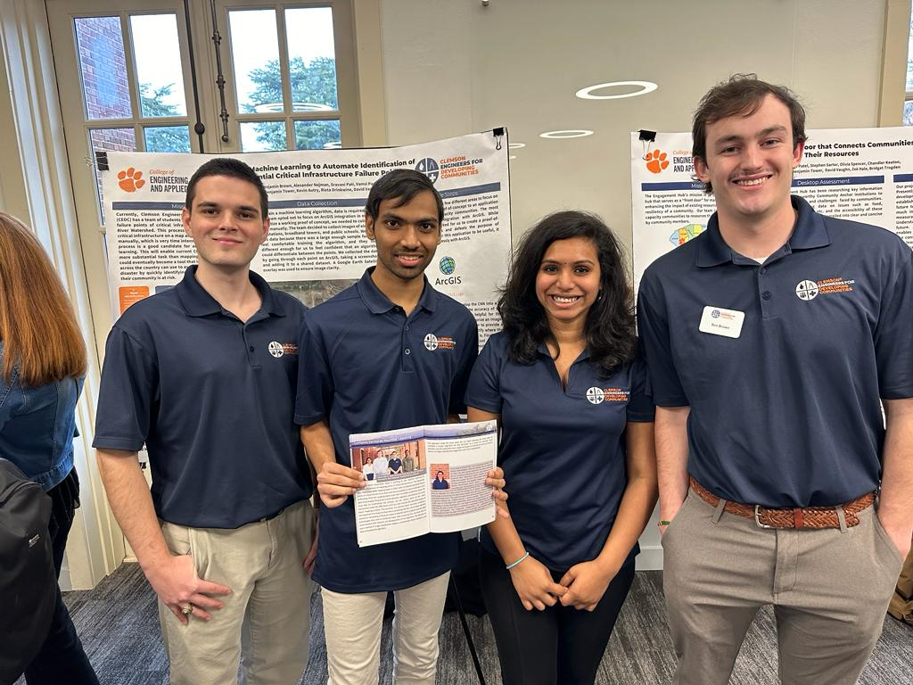
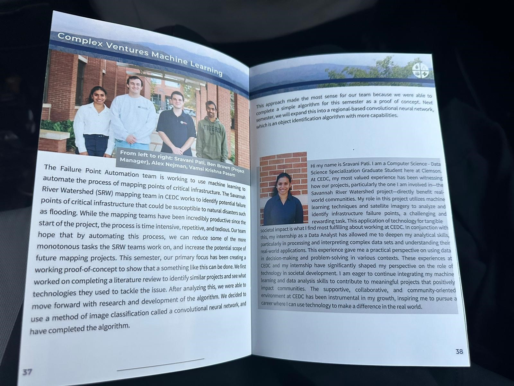

Failure Point Automation Project(2023)

Failure Point Automation
In this project, we integrated machine learning with GIS to automate critical infrastructure risk analysis, enhancing disaster resilience in low-capacity communities through advanced CNN and R-CNN technologies.
Mission Statement
Currently, Clemson Engineers for Developing Communities (CEDC) has a team of students who work on mapping potential failure points of critical infrastructure along the Savannah River Watershed. This process involves going to each piece critical infrastructure on a map and identifying its failure point manually, which is very time intensive. Our team believes this process is a good candidate for automation using machine learning. This will enable current CEDC students to focus on more substantial task than mapping point. Additionally, this could eventually become a tool that low-capacity communities across the country can use to assess their resilience to natural disaster by quickly identifying what critical infrastructure in their community is at risk.
Algorithm selection
From our literature review, we found research that would help inform the decisions we made later. We discovered that there are Application Programming Interfaces (API) that can help integrate our machine learning algorithm with ArcGIS in the future, which is the application CEDC interns use to map critical infrastructure. We were also able to narrow down what kind of algorithm we wanted to use to address the problem, and eventually decided on a Convolutional Neural Network (CNN), which worked best for our team for multiple reasons. A CNN is an image classification algorithm, which means it simply labels an entire image based on the categories it was trained on. In the long run, we will need to develop this into an object recognition algorithm, which can identify multiple objects in a single image. What makes a CNN perfect for our team is it can easily be developed into a Region-based Convolutional Neural Network (R-CNN), which is an object recognition algorithm that will fulfill the long-term scope of the project. By implementing a CNN with plans to evolve it into a R-CNN, we can establish a working proof-of-concept quickly, and keep the door open in the future for further development.
Data Collection
To train a machine learning algorithm, data is required. Since the team opted not to focus on ArcGIS integration in order to prioritize a working proof of concept, we needed to collect the data manually. The team decided to collect images of electrical substations, broadband towers, and public schools. We chose this data because there was a large enough sample for us to feel comfortable training the algorithm, and they look different enough for us to feel confident that an algorithm could differentiate between the points. We collected the data by going through each point on ArcGIS, taking a screenshot, and adding it to a shared dataset. A Google Earth Satellite overlay was used to ensure image clarity.

Sample Data
Algorithm Selection
To implement the algorithm, the initial step involved cleaning, processing, and labeling the data. This ensures that all the data is in the correct format for the machine learning algorithm to train on. Additionally, we implemented data augmentation to increase the sample the algorithm was training on. This process takes the images we collected and creates multiple permutations of each image by flipping and rotating it, essentially increasing the sample size. Once we implemented the algorithm, we noticed we are not getting the results that are expected. The accuracy of the algorithm is very low, so the next steps are to identify what could be going wrong and refine the code to solve those issues. The team has the following leads on what could be wrong: The data augmentation may not be implemented correctly Data Transfer could be needed to increase the sample size further There are simple implementation errors we have not identified Once we solve the issue, we will continue to test and refine to improve the accuracy.
Labelling Screenshot
Preprocessing Screenshot
ModelTraining Screenshot
Test Screenshot
Future Steps
In future semesters, there are a few different areas to focus on to take this project from a proof-of-concept to an application that can be used by low-capacity communities. The most important focus will be integration with ArcGIS. While manually collecting data worked for us to create a proof-of-concept, it is very tedious and defeats the purpose of automating the mapping. For this application to be useful, it needs to be integrated seamlessly with ArcGIS. Additionally, the team will need to develop the CNN into a R-CNN once the team is comfortable with the accuracy of the CNN. Image classification will not be very helpful for this project in the long-run, as all it can do is categorize an image. We will need to use object recognition in order to provide a more through analysis on each image and identify where the exact failure point of the critical infrastructure is. Finally, we intend to expand this algorithm to beyond just electrical substations, broadband towers, and public schools. This will be challenging because it we will need to find a way to collect the data, but it is necessary to make sure this application is helpful to communities.
Our Team
Acknowledgements
This work was supported in part by the United States Army Corps of Engineers, and many other sponsors and donors.
Presented on Fall Summit
Project Highlights
As a dedicated group member of the Savannah River Watershed project, I have utilized machine learning and satellite imagery to identify infrastructure vulnerabilities, demonstrating the transformative power of technology in societal advancement.

Group Member Highlight
Summit Book Highlight
References
1. https://doi.org/10.3390/rs14215331
2. Machine Learning Automation
3. Deep Learning for Critical Infrastructure Resilience
4. NCBI Article PMC10041487
5. Statistics Canada Article
6. NCBI Article PMC9098279
7. Using Python to Classify Land Cover
8. Satellite Image Deep Learning Techniques
For a detailed view of the code, check out the GitHub repository:
View the Code on GitHub